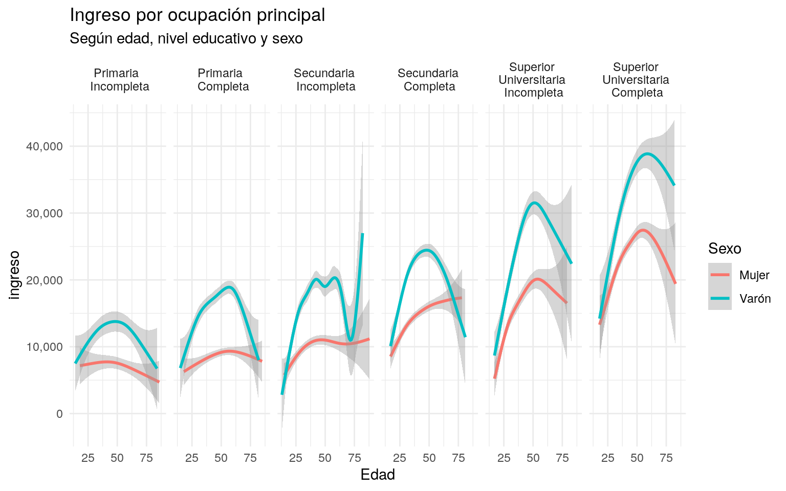
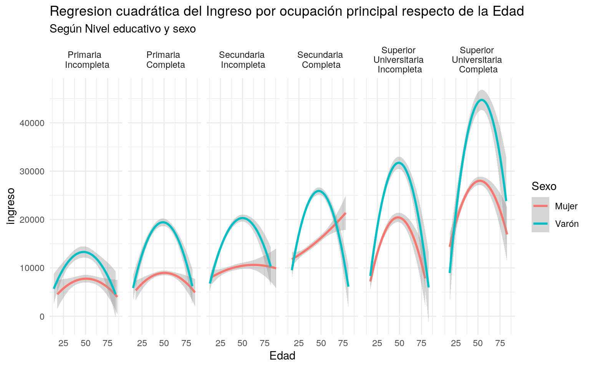

4.2 Práctica Guiada
4.2.1 Caso práctico: Gráficos de ingresos - EPH
Para esta práctica utilizaremos las variables de ingresos captadas por la Encuesta Permanente de Hogares
A continuación utilzaremos los conceptos abordados, para realizar gráficos a partir de las variables de ingresos.
#Cargamos las librerías a utilizar
library(tidyverse) # tiene ggplot, dplyr, tidyr, y otros
library(ggthemes) # estilos de gráficos
library(ggrepel) # etiquetas de texto más prolijas que las de ggplot
library(scales)
Individual_t119 <- read.table("fuentes/usu_individual_t119.txt",
sep=";", dec=",", header = TRUE, fill = TRUE)4.2.1.1 Histogramas
Por ejemplo, si observamos el ingreso de la ocupación principal:
hist_data <-Individual_t119 %>%
filter(P21>0)
ggplot(hist_data, aes(x = P21,weights = PONDIIO))+
geom_histogram(fill='salmon', color='grey25')+
scale_x_continuous(limits = c(0,50000))
En este gráfico, los posibles valores de p21 se dividen en 30 bins consecutivos y el gráfico muestra cuantas observaciones caen en cada uno de ellos
4.2.1.2 Kernels
La función geom_density() nos permite construir kernels de la distribución. Es particularmente útil cuando tenemos una variable continua, dado que los histogramas rompen esa sensación de continuidad.
Veamos un ejemplo sencillo con los ingresos de la ocupación principal. Luego iremos complejizandolo
kernel_data <-Individual_t119 %>%
filter(P21>0)
ggplot(kernel_data, aes(x = P21,weights = PONDIIO))+
geom_density(fill='salmon', color='grey25')+
scale_x_continuous(limits = c(0,50000))El eje y no tiene demasiada interpretabilidad en los Kernel, porque hace a la forma en que se construyen las distribuciones.
El parametro adjust, dentro de la función geom_densitynos permite reducir o ampliar el rango de suavizado de la distribución. Su valor por default es 1. Veamos que sucede si lo seteamos en 2
ggplot(kernel_data, aes(x = P21,weights = PONDIIO))+
geom_density(adjust = 2,fill='salmon', color='grey25')+
scale_x_continuous(limits = c(0,50000))
Como es esperable, la distribución del ingreso tiene “picos” en los valores redondos, ya que la gente suele declarar un valor aproximado al ingreso efectivo que percibe. Nadie declara ingresos de 30001. Al suavizar la serie con un kernel, eliminamos ese efecto.Si seteamos el rango para el suavizado en valores menores a 1, podemos observar estos picos.
ggplot(kernel_data, aes(x = P21,weights = PONDIIO))+
geom_density(adjust = 0.01,fill='salmon', color='grey25')+
scale_x_continuous(limits = c(0,50000))
4.2.1.3 Geom Smooth
Para realizar estos gráficos, vamos a modificar un poco los datos:
- filtramos los ingresos iguales a 0.
- eliminamos las no respuestas de nivel educativo y las personas con educación especial.
- eliminamos las respuestas de tipo de establecimiento = ‘otros’.
- recodificamos las variables para que tengan nombres más sugestivos:
- Nivel educativo además la convertimos a factor, porque queremos explicitarle el orden de los valores con
levels(). El “\n”" es un caracter especial que permite que el string continúe en la siguiente línea. - Sexo.
- Tipo de establecimiento.
- Nivel educativo además la convertimos a factor, porque queremos explicitarle el orden de los valores con
ggdata <- Individual_t119 %>%
filter(P21>0,
!is.na(NIVEL_ED),
NIVEL_ED!=7,
PP04A !=3) %>%
mutate(NIVEL_ED = factor(case_when(NIVEL_ED == 1 ~ 'Primaria \n Incompleta', # '\n' significa carriage return, o enter
NIVEL_ED == 2 ~ 'Primaria \n Completa',
NIVEL_ED == 3 ~ 'Secundaria \nIncompleta',
NIVEL_ED == 4 ~ 'Secundaria \nCompleta',
NIVEL_ED == 5 ~ 'Superior \nUniversitaria \nIncompleta',
NIVEL_ED == 6 ~ 'Superior \nUniversitaria \nCompleta',
FALSE ~ 'Otro'),
levels= c('Primaria \n Incompleta',
'Primaria \n Completa',
'Secundaria \nIncompleta',
'Secundaria \nCompleta',
'Superior \nUniversitaria \nIncompleta',
'Superior \nUniversitaria \nCompleta')),
Sexo = case_when(CH04 == 1 ~ 'Varón',
CH04 == 2 ~ 'Mujer'),
Establecimiento = case_when(PP04A == 1 ~ 'Estatal',
PP04A == 2 ~ 'Privado',
FALSE ~ 'Otro'))
ggdata %>%
sample_n(10)## CODUSU ANO4 TRIMESTRE NRO_HOGAR COMPONENTE H15
## 1 TQRMNOTYWHLOKMCDEFIAH00600502 2019 1 1 2 1
## 2 TQRMNOTSVHMMKOCDEIOAH00634309 2019 1 1 2 1
## 3 TQRMNOQVTHLMKUCDEGJBF00602085 2019 1 1 2 1
## 4 TQRMNOPYUHLMLQCDEIGED00604015 2019 1 1 3 1
## 5 TQSMNOQQTHKNKRCDEIGED00632450 2019 1 1 1 1
## 6 TQRMNOPTYHMMKMCDEIJAH00633705 2019 1 1 2 1
## 7 TQRMNOQRPHLMKRCDEFNFF00601393 2019 1 1 2 1
## 8 TQRMNOSRVHLOKMCDEHPJB00603826 2019 1 1 2 1
## 9 TQRMNOSPRHMOKNCDEGJBF00630307 2019 1 1 1 1
## 10 TQRMNOPSUHMMKUCDEGPDJ00631320 2019 1 1 2 1
## REGION MAS_500 AGLOMERADO PONDERA CH03 CH04 CH05 CH06 CH07 CH08
## 1 43 S 2 589 2 2 29/12/1968 50 2 1
## 2 43 N 38 93 2 2 31/12/1970 48 1 1
## 3 43 S 13 570 2 2 18/08/1996 22 1 4
## 4 43 N 30 125 4 1 06/12/1959 59 1 1
## 5 43 N 30 103 1 2 25/03/1983 35 5 1
## 6 1 S 33 1830 2 2 15/01/1971 48 2 1
## 7 41 N 7 256 2 2 26/02/1973 46 2 4
## 8 40 S 29 340 3 1 29/08/1987 31 5 4
## 9 43 S 13 455 1 1 04/06/1973 45 1 4
## 10 40 N 19 148 2 1 07/09/1960 58 1 4
## CH09 CH10 CH11 CH12 CH13 CH14 CH15 CH15_COD CH16 CH16_COD
## 1 1 2 0 4 1 NA 1 NA 1 NA
## 2 1 2 0 6 2 99 1 NA 1 NA
## 3 1 2 0 5 1 NA 5 222 1 NA
## 4 1 2 0 2 1 NA 2 NA 1 NA
## 5 1 2 0 7 2 1 1 NA 1 NA
## 6 1 2 0 7 2 2 1 NA 1 NA
## 7 1 2 0 4 2 1 3 6 1 NA
## 8 1 1 2 6 2 3 1 NA 1 NA
## 9 1 2 0 2 1 NA 1 NA 1 NA
## 10 1 2 0 4 1 NA 1 NA 1 NA
## NIVEL_ED ESTADO CAT_OCUP CAT_INAC IMPUTA
## 1 Secundaria \nCompleta 1 3 0 0
## 2 Superior \nUniversitaria \nIncompleta 1 3 0 0
## 3 Secundaria \nCompleta 1 3 0 0
## 4 Primaria \n Completa 1 2 0 0
## 5 Superior \nUniversitaria \nIncompleta 1 3 0 0
## 6 Superior \nUniversitaria \nIncompleta 1 3 0 0
## 7 Secundaria \nIncompleta 1 3 0 0
## 8 Superior \nUniversitaria \nIncompleta 1 3 0 0
## 9 Primaria \n Completa 1 2 0 0
## 10 Secundaria \nCompleta 1 2 0 0
## PP02C1 PP02C2 PP02C3 PP02C4 PP02C5 PP02C6 PP02C7 PP02C8 PP02E PP02H
## 1 0 0 0 0 0 0 0 0 0 0
## 2 0 0 0 0 0 0 0 0 0 0
## 3 0 0 0 0 0 0 0 0 0 0
## 4 0 0 0 0 0 0 0 0 0 0
## 5 0 0 0 0 0 0 0 0 0 0
## 6 0 0 0 0 0 0 0 0 0 0
## 7 0 0 0 0 0 0 0 0 0 0
## 8 0 0 0 0 0 0 0 0 0 0
## 9 0 0 0 0 0 0 0 0 0 0
## 10 0 0 0 0 0 0 0 0 0 0
## PP02I PP03C PP03D PP3E_TOT PP3F_TOT PP03G PP03H PP03I PP03J INTENSI
## 1 0 1 0 48 0 2 0 2 2 3
## 2 0 0 0 0 0 2 0 2 2 4
## 3 0 1 0 45 0 2 0 2 9 2
## 4 0 1 0 18 0 1 1 1 1 1
## 5 0 1 0 30 0 2 0 2 2 2
## 6 0 0 0 0 0 2 0 2 2 4
## 7 0 2 2 9 5 2 0 2 2 2
## 8 0 1 0 45 0 1 1 1 1 2
## 9 0 1 0 42 0 1 1 1 1 2
## 10 0 1 0 24 0 1 1 1 1 1
## PP04A PP04B_COD PP04B1 PP04B2 PP04B3_MES PP04B3_ANO PP04B3_DIA PP04C
## 1 2 4803 2 0 0 0 0 3
## 2 2 8501 2 0 0 0 0 9
## 3 2 9700 1 1 8 0 0 0
## 4 2 9609 2 0 0 0 0 1
## 5 2 9602 2 0 0 0 0 2
## 6 2 6400 2 0 0 0 0 6
## 7 2 9700 1 2 2 0 0 0
## 8 2 8600 2 0 0 0 0 3
## 9 2 1009 2 0 0 0 0 3
## 10 2 1600 2 0 0 0 0 1
## PP04C99 PP04D_COD PP04G PP05B2_MES PP05B2_ANO PP05B2_DIA PP05C_1
## 1 0 30314 1 0 0 0 0
## 2 0 20333 1 0 0 0 0
## 3 0 57314 0 0 0 0 0
## 4 0 58112 6 0 0 0 3
## 5 0 57313 1 0 0 0 0
## 6 0 20332 1 0 0 0 0
## 7 0 55314 0 0 0 0 0
## 8 0 40312 8 0 0 0 0
## 9 0 53113 6 0 0 0 1
## 10 0 80113 6 0 0 0 1
## PP05C_2 PP05C_3 PP05E PP05F PP05H PP06A PP06C PP06D PP06E PP06H PP07A
## 1 0 0 0 0 0 0 0 0 0 0 6
## 2 0 0 0 0 0 0 0 0 0 0 6
## 3 0 0 0 0 0 0 0 0 0 0 0
## 4 3 3 1 7 6 2 16000 0 0 0 0
## 5 0 0 0 0 0 0 0 0 0 0 6
## 6 0 0 0 0 0 0 0 0 0 0 6
## 7 0 0 0 0 0 0 0 0 0 0 0
## 8 0 0 0 0 0 0 0 0 0 0 5
## 9 3 3 1 7 3 1 0 5000 3 1 0
## 10 3 3 1 7 6 2 10000 0 0 0 0
## PP07C PP07D PP07E PP07F1 PP07F2 PP07F3 PP07F4 PP07F5 PP07G1 PP07G2
## 1 2 0 0 2 2 2 2 5 1 1
## 2 2 0 0 2 2 2 2 5 1 1
## 3 0 0 0 1 2 2 2 0 2 2
## 4 0 0 0 0 0 0 0 0 0 0
## 5 2 0 0 2 2 2 2 5 2 2
## 6 2 0 0 2 2 2 2 5 1 1
## 7 0 0 0 2 2 2 2 5 2 2
## 8 1 9 4 2 2 2 1 0 2 2
## 9 0 0 0 0 0 0 0 0 0 0
## 10 0 0 0 0 0 0 0 0 0 0
## PP07G3 PP07G4 PP07G_59 PP07H PP07I PP07J PP07K PP08D1 PP08D4 PP08F1
## 1 1 1 0 1 0 1 1 12000 0 0
## 2 1 1 0 1 0 1 1 30000 0 0
## 3 2 2 5 2 2 1 4 10000 0 0
## 4 0 0 0 0 0 0 0 0 0 0
## 5 2 1 0 2 1 1 3 16000 0 0
## 6 1 1 0 1 0 1 1 30000 0 0
## 7 2 2 5 2 2 1 4 900 0 0
## 8 2 2 5 2 2 3 4 10000 0 0
## 9 0 0 0 0 0 0 0 0 0 0
## 10 0 0 0 0 0 0 0 0 0 0
## PP08F2 PP08J1 PP08J2 PP08J3 PP09A PP09A_ESP PP09B PP09C PP09C_ESP PP10A
## 1 0 0 0 0 0 0 0 NA
## 2 0 15000 0 0 0 0 0 NA
## 3 0 0 0 0 0 0 0 NA
## 4 0 0 0 0 0 0 0 NA
## 5 0 0 0 0 0 0 0 NA
## 6 0 0 0 0 1 0 0 NA
## 7 0 0 0 0 0 1 0 NA
## 8 0 0 0 0 0 0 0 NA
## 9 0 0 0 0 0 0 0 NA
## 10 0 0 0 0 0 0 0 NA
## PP10C PP10D PP10E PP11A PP11B_COD PP11B1 PP11B2_MES PP11B2_ANO
## 1 NA NA NA NA NA NA NA NA
## 2 NA NA NA NA NA NA NA NA
## 3 NA NA NA NA NA NA NA NA
## 4 NA NA NA NA NA NA NA NA
## 5 NA NA NA NA NA NA NA NA
## 6 NA NA NA NA NA NA NA NA
## 7 NA NA NA NA NA NA NA NA
## 8 NA NA NA NA NA NA NA NA
## 9 NA NA NA NA NA NA NA NA
## 10 NA NA NA NA NA NA NA NA
## PP11B2_DIA PP11C PP11C99 PP11D_COD PP11G_ANO PP11G_MES PP11G_DIA PP11L
## 1 NA NA NA NA NA NA NA NA
## 2 NA NA NA NA NA NA NA NA
## 3 NA NA NA NA NA NA NA NA
## 4 NA NA NA NA NA NA NA NA
## 5 NA NA NA NA NA NA NA NA
## 6 NA NA NA NA NA NA NA NA
## 7 NA NA NA NA NA NA NA NA
## 8 NA NA NA NA NA NA NA NA
## 9 NA NA NA NA NA NA NA NA
## 10 NA NA NA NA NA NA NA NA
## PP11L1 PP11M PP11N PP11O PP11P PP11Q PP11R PP11S PP11T P21 DECOCUR
## 1 NA NA NA NA NA NA NA NA NA 12000 4
## 2 NA NA NA NA NA NA NA NA NA 30000 8
## 3 NA NA NA NA NA NA NA NA NA 10000 3
## 4 NA NA NA NA NA NA NA NA NA 16000 5
## 5 NA NA NA NA NA NA NA NA NA 16000 5
## 6 NA NA NA NA NA NA NA NA NA 30000 9
## 7 NA NA NA NA NA NA NA NA NA 900 1
## 8 NA NA NA NA NA NA NA NA NA 10000 3
## 9 NA NA NA NA NA NA NA NA NA 5000 2
## 10 NA NA NA NA NA NA NA NA NA 10000 3
## IDECOCUR RDECOCUR GDECOCUR PDECOCUR ADECOCUR PONDIIO TOT_P12 P47T
## 1 4 4 4 NA 4 694 0 12000
## 2 9 8 NA 9 9 104 0 45000
## 3 4 3 3 NA 3 596 0 10000
## 4 5 5 NA 5 5 180 0 41000
## 5 5 5 NA 5 5 125 0 16000
## 6 NA 8 9 NA 9 2487 0 30000
## 7 1 1 NA 1 1 281 1600 3700
## 8 4 5 3 NA 4 347 0 12600
## 9 2 2 2 NA 2 451 0 5000
## 10 3 4 NA 3 4 147 0 10000
## DECINDR IDECINDR RDECINDR GDECINDR PDECINDR ADECINDR PONDII V2_M V3_M
## 1 4 4 4 4 NA 4 728 0 0
## 2 9 10 10 NA 10 10 113 0 0
## 3 3 4 3 3 NA 4 592 0 0
## 4 9 10 9 NA 10 9 186 0 0
## 5 5 6 5 NA 6 5 121 0 0
## 6 8 NA 8 8 NA 9 2492 0 0
## 7 1 1 1 NA 1 1 282 0 0
## 8 4 5 6 4 NA 6 352 0 0
## 9 2 2 1 2 NA 2 457 0 0
## 10 3 4 4 NA 4 4 149 0 0
## V4_M V5_M V8_M V9_M V10_M V11_M V12_M V18_M V19_AM V21_M T_VI ITF
## 1 0 0 0 0 0 0 0 0 0 0 0 0
## 2 0 0 0 0 0 0 0 0 0 0 0 93000
## 3 0 0 0 0 0 0 0 0 0 0 0 55800
## 4 0 0 25000 0 0 0 0 0 0 0 25000 0
## 5 0 0 0 0 0 0 0 0 0 0 0 16000
## 6 0 0 0 0 0 0 0 0 0 0 0 52000
## 7 0 0 0 0 0 0 1200 0 0 0 1200 17700
## 8 0 0 0 0 0 2600 0 0 0 0 2600 33000
## 9 0 0 0 0 0 0 0 0 0 0 0 26200
## 10 0 0 0 0 0 0 0 0 0 0 0 35000
## DECIFR IDECIFR RDECIFR GDECIFR PDECIFR ADECIFR IPCF DECCFR IDECCFR
## 1 NA NA NA NA NA NA 0.00 NA NA
## 2 10 10 10 NA 10 10 18600.00 7 8
## 3 8 9 9 8 NA 9 7971.43 3 4
## 4 NA NA NA NA NA NA 0.00 NA NA
## 5 2 3 2 NA 3 2 16000.00 7 7
## 6 8 NA 8 8 NA 8 13000.00 6 NA
## 7 3 3 4 NA 3 3 3540.00 1 1
## 8 6 6 7 6 NA 7 16500.00 7 7
## 9 5 5 5 5 NA 5 5240.00 2 2
## 10 6 6 7 NA 6 7 17500.00 7 8
## RDECCFR GDECCFR PDECCFR ADECCFR PONDIH Sexo Establecimiento
## 1 NA NA NA NA 0 Mujer Privado
## 2 7 NA 8 8 131 Mujer Privado
## 3 3 3 NA 3 611 Mujer Privado
## 4 NA NA NA NA 0 Varón Privado
## 5 7 NA 7 6 134 Mujer Privado
## 6 5 6 NA 6 2956 Mujer Privado
## 7 2 NA 1 1 366 Mujer Privado
## 8 8 7 NA 8 355 Varón Privado
## 9 2 2 NA 2 458 Varón Privado
## 10 9 NA 8 9 145 Varón PrivadoPara graficar un suavizado de las series, se utiliza la función geom_smooth(). Con suavizado nos referimos al gráfico de un modelo realizado sobre los datos, que estima el valor en el punto x,y (para el grupo). Las regresiones lineales son un ejemplo de esto, aunque no el único, ni el que viene por default.
ggplot(ggdata, aes(CH06, P21, colour = Sexo, shape = Sexo, alpha = P21))+
geom_smooth() +
labs(
x = 'Edad',
y = 'ingreso',
title = 'Ingreso por ocupación principal',
subtitle = 'Según edad, nivel educativo y sexo') +
theme_minimal()+
scale_y_continuous(labels = comma)+
scale_alpha(guide = FALSE)+
facet_grid(.~NIVEL_ED)
Si corremos el comando geom_smooth() por default, nos advierte que esta utilizando el método GAM, de general additive models.
el sombreado gris que envuelve cada línea es el intervalo de confianza de dicho punto (95% por default).
También podemos utilizar métodos lineales, agregando el parámetro method = 'lm'. Haciendo esto, el gráfico muestra una regresión lineal simple. Si queremos otro tipo de regresión lineal, le podemos explicitar la fórmula.
En el ejemplo siguiente, utilizamos la formula \(y = \beta_0 +\beta_1x +\beta_2 x^2\).
ggplot(ggdata, aes(CH06, P21, colour = Sexo, weight = PONDIIO)) +
geom_smooth(method = "lm", formula = y ~ poly(x, 2)) +
labs(x = 'Edad',
y = 'ingreso',
title = 'Regresion cuadrática del Ingreso por ocupación principal respecto de la Edad',
subtitle = 'Según Nivel educativo y sexo') +
theme_minimal()+
facet_grid(. ~ NIVEL_ED)
Si quisiéramos, además de ver la relación entre ingreso, Edad, Sexo y Nivel educativo, incorporar el tipo de establecimiento,público o privado. Podemos facetear el gráfico por dos variables en lugar de una, lo que crea una matriz de gráficos según los cruces.
ggplot(ggdata, aes(CH06, P21, colour = Establecimiento, weight = PONDIIO)) +
geom_smooth(method = "lm") +
labs(
x = 'Edad',
y = 'ingreso',
title = 'Tendencia del ingreso por ocupación principal',
subtitle = 'Según edad, nivel educativo, sexo y tipo de establecimiento') +
theme_minimal()+
facet_grid(Sexo ~ NIVEL_ED)
4.2.1.4 Treemaps (bonus track)
Trabajo doméstico no remunerado
trabajo_no_remunerado %>%
filter(sexo != 'TOTAL', grupo_edad != 'TOTAL') %>%
mutate(promedio_hs_diarias = as.numeric(promedio_hs_diarias),
sexo = case_when(sexo=='m'~'Mujer',
sexo=='v'~'Varón')) %>%
ggplot(., aes(area = promedio_hs_diarias, fill = promedio_hs_diarias, label = grupo_edad,
subgroup = sexo)) +
geom_treemap() +
geom_treemap_subgroup_border() +
geom_treemap_subgroup_text(place = "centre", grow = T, alpha = 0.5, colour =
"black", fontface = "italic", min.size = 0) +
geom_treemap_text(colour = "white", place = "topleft", reflow = T)+
theme(legend.position = 'none')